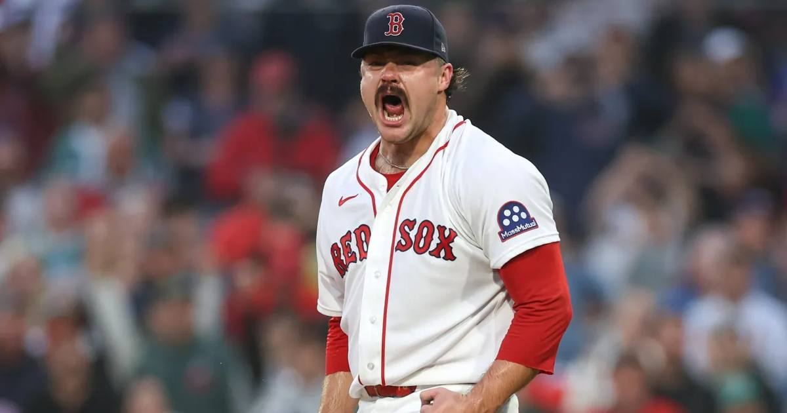

Payton Tolle Named a Finalist for AL Rookie of the Year
The 23-year-old left-hander went 9-6 with a 3.03 ERA and 171 strikeouts in 26 starts, and now he's one of three finalists for the BBWAA's American League Rookie of the Year. The winner is announced Nov. 9.

Disclosure: this post contains affiliate links. I earn a commission on qualifying purchases.
Payton Tolle is a finalist for American League Rookie of the Year. The Baseball Writers' Association of America revealed its 2026 award finalists on Monday, and the Red Sox left-hander is one of three names left standing for the AL's top rookie honor — with the winner announced Nov. 9.
The Red Sox announced it the way these things land now: a graphic, a mustache, and a simple message — your favorite player's favorite player.
The season that got him here
Tolle didn't break camp with the big club. He was recalled from Triple-A Worcester on April 23, and from there he never gave the rotation spot back.
Starts: 26
Record: 9-6
ERA: 3.03
Strikeouts: 171
Innings: 148.2
Strikeouts per 9: 10.35
The deeper numbers are just as loud: his 3.04 FIP led all American League rookie starters, and his 4.1 fWAR ranked second. This wasn't a hot month or a soft schedule — it was a full season of frontline rookie pitching, and it held up across 26 starts.
The competition
Tolle isn't walking into this one unopposed. The other two finalists:
• Kevin McGonigle, Tigers — the 21-year-old shortstop/third baseman hit .278 with 18 home runs, and he's widely seen as the favorite after a 156-game rookie campaign in Detroit.
• Parker Messick, Guardians — the 25-year-old right-hander posted a 2.56 ERA across 32 starts for the AL Central-winning Guardians, the lowest mark among AL rookie starters.
So it's a real three-way race: the bat, the ERA leader, and the strikeout lefty from Boston.
What's next
The Rookie of the Year winners are announced Nov. 9, kicking off awards week. If Tolle takes it, he'd be the first Red Sox player to win AL Rookie of the Year since Dustin Pedroia in 2007 — and given the season he just put together, nobody in Boston would call it a surprise.
Sources: MLB awards finalists revealed: See top three for MVP, Cy Young and more, BBWAA Awards 2026 Full List of Finalists Announced and Reaction
Gear up: Fanatics